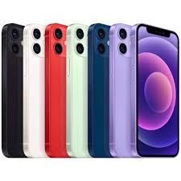

Produk Kami
iPhone 14 Pro
Harga: Rp 15.000.000
Spesifikasi iPhone 14 Pro Layar: 6.1 inci Super Retina XDR Resolusi: 2556 x 1179 piksel Teknologi ProMotion dengan refresh rate hingga 120Hz Prosesor: A16 Bionic chip dengan 6-core CPU, 5-core GPU, dan 16-core Neural Engine Kamera Belakang: Kamera Utama: 48 MP (wide) dengan aperture f/1.78 Kamera Ultra Wide: 12 MP dengan aperture f/2.2 Kamera Telephoto: 12 MP dengan aperture f/2.8 dan 3x optical zoom Fitur: Night mode, Deep Fusion, Photonic Engine, ProRAW, ProRes video recording Kamera Depan: 12 MP dengan aperture f/1.9 Fitur: Night mode, Deep Fusion, Smart HDR 4, 4K Dolby Vision HDR recording Penyimpanan: Pilihan 128 GB, 256 GB, 512 GB, dan 1 TB Baterai: Daya tahan baterai hingga 23 jam untuk panggilan Pengisian cepat, mendukung pengisian nirkabel MagSafe dan Qi Sistem Operasi: iOS 16 (dapat diperbarui ke versi terbaru) Konektivitas: 5G, Wi-Fi 6, Bluetooth 5.3, U1 chip (Ultra Wideband) Fitur Tambahan: Face ID Material: Stainless steel dan Ceramic Shield Tahan air dan debu (IP68) Dimensi dan Berat: Dimensi: 147.5 x 71.5 x 7.85 mm Berat: 206 gram
Beli SekarangiPhone 13
Harga: Rp 12.000.000
Spesifikasi iPhone 13 Layar: 6.1 inci Super Retina XDR Resolusi: 2532 x 1170 piksel Brightness: 800 nits (normal), 1200 nits (peak HDR) Prosesor: A15 Bionic chip dengan 6-core CPU, 4-core GPU, dan 16-core Neural Engine Kamera Belakang: Dual Kamera: Kamera Utama: 12 MP (wide) dengan aperture f/1.6 Kamera Ultra Wide: 12 MP dengan aperture f/2.4 dan 120° field of view Fitur: Night mode, Deep Fusion, Smart HDR 4, Photographic Styles, 4K Dolby Vision HDR recording Kamera Depan: 12 MP dengan aperture f/2.2 Fitur: Night mode, Deep Fusion, Smart HDR 4, 4K Dolby Vision HDR recording Penyimpanan: Pilihan 128 GB, 256 GB, dan 512 GB Baterai: Daya tahan baterai hingga 19 jam untuk panggilan Pengisian cepat, mendukung pengisian nirkabel MagSafe dan Qi Sistem Operasi: iOS 15 (dapat diperbarui ke versi terbaru) Konektivitas: 5G, Wi-Fi 6, Bluetooth 5.0, U1 chip (Ultra Wideband) Fitur Tambahan: Face ID Material: Aluminium dan Ceramic Shield Tahan air dan debu (IP68) Dimensi dan Berat: Dimensi: 146.7 x 71.5 x 7.65 mm Berat: 174 gram
Beli SekarangiPhone 15 pro
Harga : Rp 20.000.000
Spesifikasi iPhone 15 Pro Layar: 6.1 inci Super Retina XDR Resolusi: 2556 x 1179 piksel Teknologi ProMotion dengan refresh rate hingga 120Hz Prosesor: A17 Pro chip dengan 6-core CPU, 6-core GPU, dan 16-core Neural Engine Kamera Belakang: Triple Kamera: Kamera Utama: 48 MP (wide) dengan aperture f/1.78 Kamera Ultra Wide: 12 MP dengan aperture f/2.2 Kamera Telephoto: 12 MP dengan aperture f/2.8 dan 5x optical zoom (pada beberapa model) Fitur: Night mode, Deep Fusion, Photonic Engine, ProRAW, ProRes video recording, Focus mode Kamera Depan: 12 MP dengan aperture f/1.9 Fitur: Night mode, Deep Fusion, Smart HDR 4, 4K Dolby Vision HDR recording Penyimpanan: Pilihan 128 GB, 256 GB, 512 GB, dan 1 TB Baterai: Daya tahan baterai hingga 23 jam untuk panggilan Pengisian cepat, mendukung pengisian nirkabel MagSafe dan Qi Sistem Operasi: iOS 17 (dapat diperbarui ke versi terbaru) Konektivitas: 5G, Wi-Fi 6E, Bluetooth 5.3, U1 chip (Ultra Wideband) Fitur Tambahan: Face ID Material: Titanium dan Ceramic Shield Tahan air dan debu (IP68) Dimensi dan Berat: Dimensi: 144.5 x 70.6 x 8.25 mm Berat: 187 gram
Beli SekarangIphone 12
Harga : Rp 8.000.000
Spesifikasi iPhone 12 Layar: 6.1 inci Super Retina XDR Resolusi: 2532 x 1170 piksel Chip: A14 Bionic chip Kamera Belakang: Dual 12 MP (Ultra Wide dan Wide) Night mode, Deep Fusion, Smart HDR 3 Kamera Depan: 12 MP dengan Night mode dan 4K Dolby Vision HDR recording Baterai: Daya tahan hingga 17 jam pemutaran video Penyimpanan: Tersedia dalam 64 GB, 128 GB, dan 256 GB Sistem Operasi: iOS (dapat diupgrade ke versi terbaru) Fitur Lain: 5G capable MagSafe untuk aksesori dan pengisian daya nirkabel Sertifikasi IP68 (tahan air dan debu)
Beli SekarangIphone x

Harga : Rp 5.500.000
Spesifikasi iPhone X Layar: 5.8 inci Super Retina HD Resolusi: 2436 x 1125 piksel Chip: A11 Bionic chip dengan Neural Engine Kamera Belakang: Dual 12 MP (Wide dan Telephoto) Optical image stabilization, Night mode, Smart HDR Kamera Depan: 7 MP dengan Portrait mode dan 1080p HD video recording Baterai: Daya tahan hingga 21 jam pemutaran video Penyimpanan: Tersedia dalam 64 GB dan 256 GB Sistem Operasi: iOS (dapat diupgrade ke versi terbaru) Fitur Lain: Face ID untuk keamanan Wireless charging (Qi-compatible) Sertifikasi IP67 (tahan air dan debu)
Beli Sekarang